Continuous colour bar guide
guide_colourbar2.RdColour bar guide shows continuous colour scales mapped onto values.
Colour bar is available with scale_fill and scale_colour.
For more information, see the inspiration for this function:
Matlab's colorbar function.
guide_colourbar2(
title = waiver(),
title.position = NULL,
title.theme = NULL,
title.hjust = NULL,
title.vjust = NULL,
label = TRUE,
label.position = NULL,
label.theme = NULL,
label.hjust = NULL,
label.vjust = NULL,
barwidth = NULL,
barheight = NULL,
nbin = 300,
raster = TRUE,
frame.colour = NULL,
frame.linewidth = 0.5/.pt,
frame.linetype = 1,
ticks = TRUE,
ticks.colour = "white",
ticks.linewidth = 0.5/.pt,
draw.ulim = TRUE,
draw.llim = TRUE,
direction = NULL,
default.unit = "line",
reverse = FALSE,
order = 0,
available_aes = c("colour", "color", "fill"),
...
)
guide_colorbar2(
title = waiver(),
title.position = NULL,
title.theme = NULL,
title.hjust = NULL,
title.vjust = NULL,
label = TRUE,
label.position = NULL,
label.theme = NULL,
label.hjust = NULL,
label.vjust = NULL,
barwidth = NULL,
barheight = NULL,
nbin = 300,
raster = TRUE,
frame.colour = NULL,
frame.linewidth = 0.5/.pt,
frame.linetype = 1,
ticks = TRUE,
ticks.colour = "white",
ticks.linewidth = 0.5/.pt,
draw.ulim = TRUE,
draw.llim = TRUE,
direction = NULL,
default.unit = "line",
reverse = FALSE,
order = 0,
available_aes = c("colour", "color", "fill"),
...
)Arguments
- title
A character string or expression indicating a title of guide. If
NULL, the title is not shown. By default (waiver()), the name of the scale object or the name specified inlabs()is used for the title.- title.position
A character string indicating the position of a title. One of "top" (default for a vertical guide), "bottom", "left" (default for a horizontal guide), or "right."
- title.theme
A theme object for rendering the title text. Usually the object of
element_text()is expected. By default, the theme is specified bylegend.titleintheme()or theme.- title.hjust
A number specifying horizontal justification of the title text.
- title.vjust
A number specifying vertical justification of the title text.
- label
logical. If
TRUEthen the labels are drawn. IfFALSEthen the labels are invisible.- label.position
A character string indicating the position of a label. One of "top", "bottom" (default for horizontal guide), "left", or "right" (default for vertical guide).
- label.theme
A theme object for rendering the label text. Usually the object of
element_text()is expected. By default, the theme is specified bylegend.textintheme().- label.hjust
A numeric specifying horizontal justification of the label text. The default for standard text is 0 (left-aligned) and 1 (right-aligned) for expressions.
- label.vjust
A numeric specifying vertical justification of the label text.
- barwidth
A numeric or a
grid::unit()object specifying the width of the colourbar. Default value islegend.key.widthorlegend.key.sizeintheme()or theme.- barheight
A numeric or a
grid::unit()object specifying the height of the colourbar. Default value islegend.key.heightorlegend.key.sizeintheme()or theme.- nbin
A numeric specifying the number of bins for drawing the colourbar. A smoother colourbar results from a larger value.
- raster
A logical. If
TRUEthen the colourbar is rendered as a raster object. IfFALSEthen the colourbar is rendered as a set of rectangles. Note that not all graphics devices are capable of rendering raster image.- frame.colour
A string specifying the colour of the frame drawn around the bar. If
NULL(the default), no frame is drawn.- frame.linewidth
A numeric specifying the width of the frame drawn around the bar in millimetres.
- frame.linetype
A numeric specifying the linetype of the frame drawn around the bar.
- ticks
A logical specifying if tick marks on the colourbar should be visible.
- ticks.colour
A string specifying the colour of the tick marks.
- ticks.linewidth
A numeric specifying the width of the tick marks in millimetres.
- draw.ulim
A logical specifying if the upper limit tick marks should be visible.
- draw.llim
A logical specifying if the lower limit tick marks should be visible.
- direction
A character string indicating the direction of the guide. One of "horizontal" or "vertical."
- default.unit
A character string indicating
grid::unit()forbarwidthandbarheight.- reverse
logical. If
TRUEthe colourbar is reversed. By default, the highest value is on the top and the lowest value is on the bottom- order
positive integer less than 99 that specifies the order of this guide among multiple guides. This controls the order in which multiple guides are displayed, not the contents of the guide itself. If 0 (default), the order is determined by a secret algorithm.
- available_aes
A vector of character strings listing the aesthetics for which a colourbar can be drawn.
- ...
ignored.
Value
A guide object
Details
Guides can be specified in each scale_* or in ggplot2::guides().
guide="legend" in scale_* is syntactic sugar for
guide=guide_legend() (e.g. scale_colour_manual(guide = "legend")).
As for how to specify the guide for each scale in more detail,
see ggplot2::guides().
Examples
df <- expand.grid(X1 = 1:10, X2 = 1:10)
df$value <- df$X1 * df$X2
p1 <- ggplot(df, aes(X1, X2)) + geom_tile(aes(fill = value))
p2 <- p1 + geom_point(aes(size = value))
# Basic form
p1 + scale_fill_continuous(guide = "colourbar")
 p1 + scale_fill_continuous(guide = guide_colourbar())
p1 + scale_fill_continuous(guide = guide_colourbar())
 p1 + guides(fill = guide_colourbar())
# Control styles
# bar size
p1 + guides(fill = guide_colourbar(barwidth = 0.5, barheight = 10))
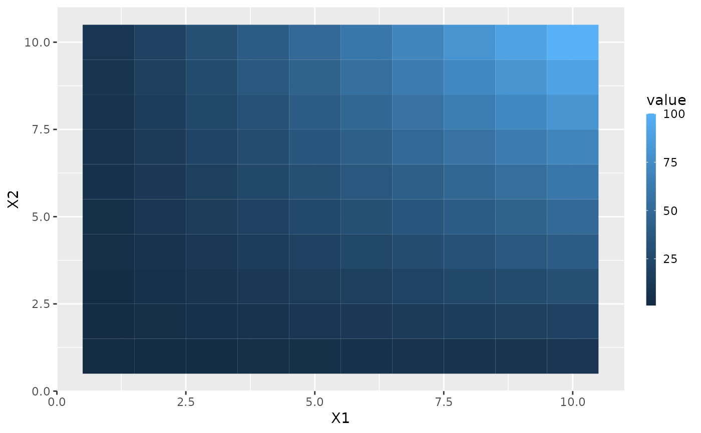
# no label
p1 + guides(fill = guide_colourbar(label = FALSE))
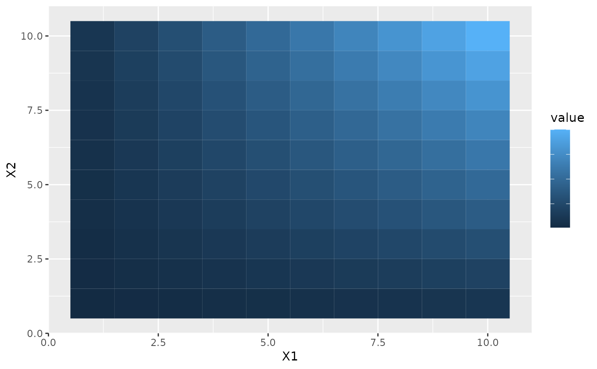
# no tick marks
p1 + guides(fill = guide_colourbar(ticks = FALSE))
# label position
p1 + guides(fill = guide_colourbar(label.position = "left"))
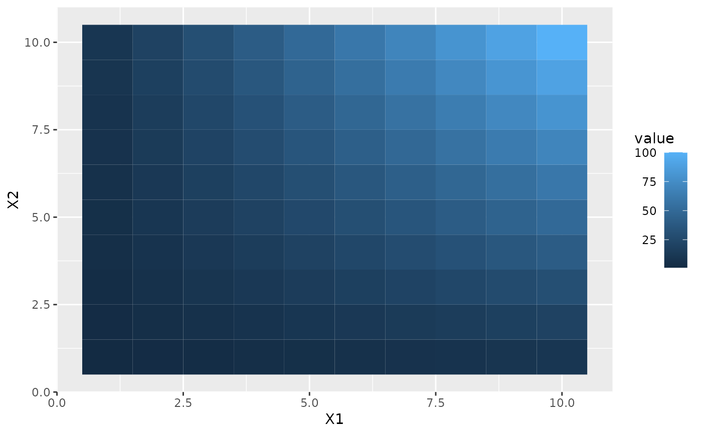
# label theme
p1 + guides(fill = guide_colourbar(label.theme = element_text(colour = "blue", angle = 0)))
# small number of bins
p1 + guides(fill = guide_colourbar(nbin = 3))
# large number of bins
p1 + guides(fill = guide_colourbar(nbin = 100))
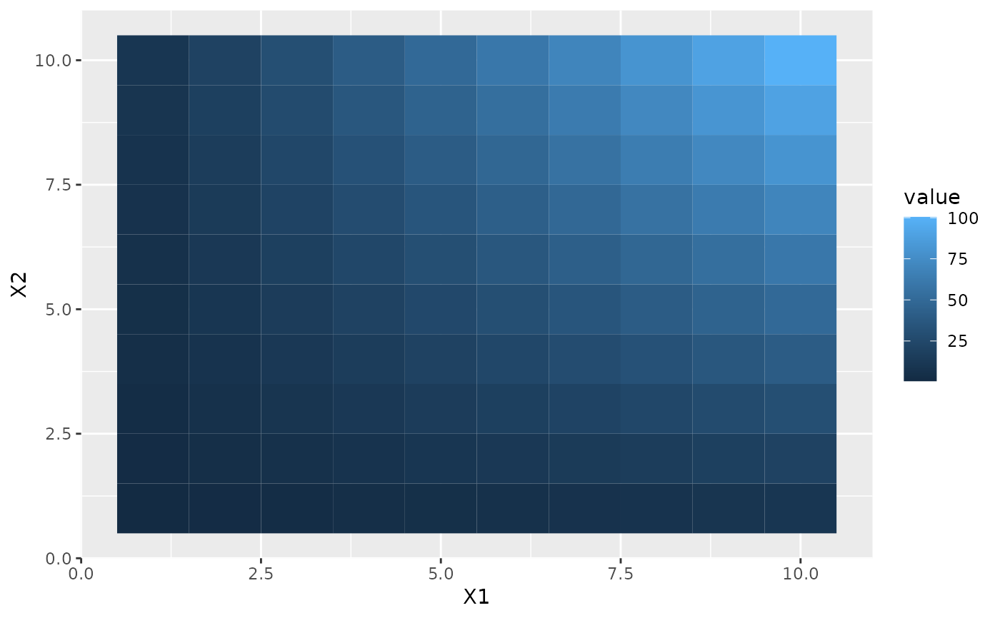
# make top- and bottom-most ticks invisible
p1 +
scale_fill_continuous(
limits = c(0,20), breaks = c(0, 5, 10, 15, 20),
guide = guide_colourbar(nbin = 100, draw.ulim = FALSE, draw.llim = FALSE)
)
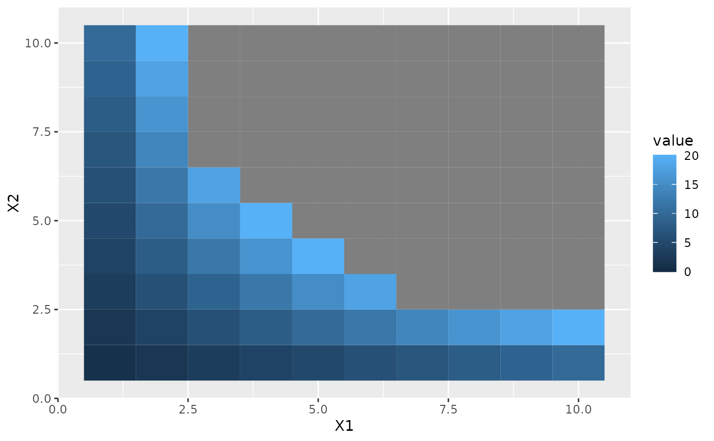
# guides can be controlled independently
p2 +
scale_fill_continuous(guide = "colourbar") +
scale_size(guide = "legend")
p1 + guides(fill = guide_colourbar())
# Control styles
# bar size
p1 + guides(fill = guide_colourbar(barwidth = 0.5, barheight = 10))
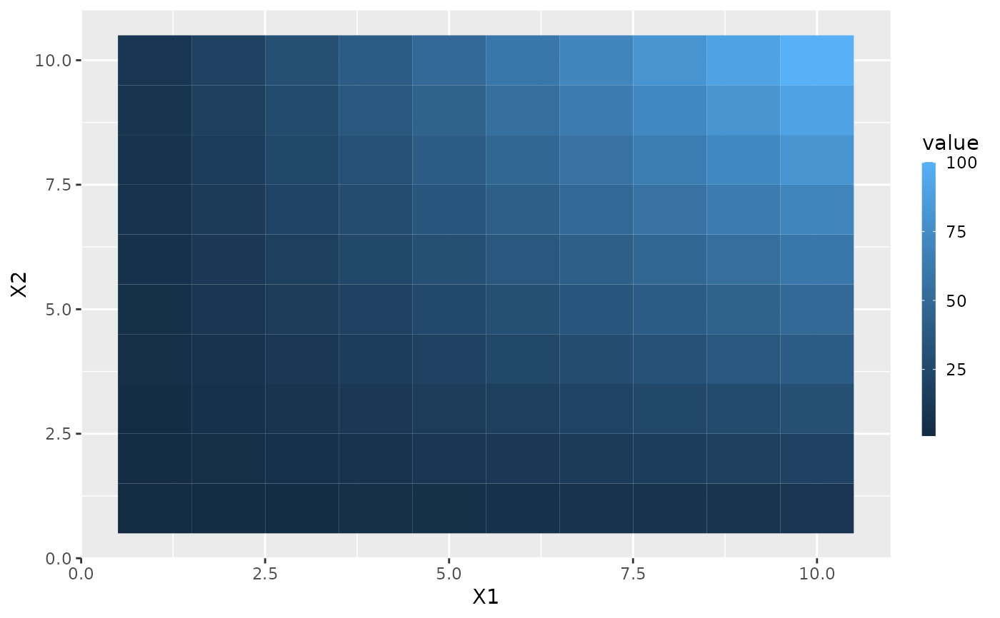
# no label
p1 + guides(fill = guide_colourbar(label = FALSE))
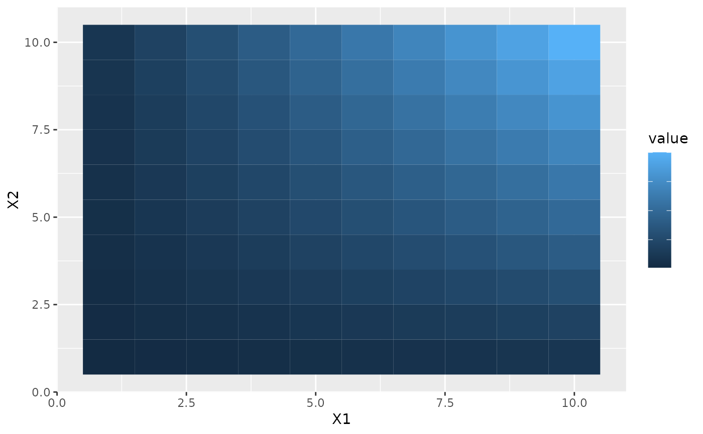
# no tick marks
p1 + guides(fill = guide_colourbar(ticks = FALSE))
# label position
p1 + guides(fill = guide_colourbar(label.position = "left"))
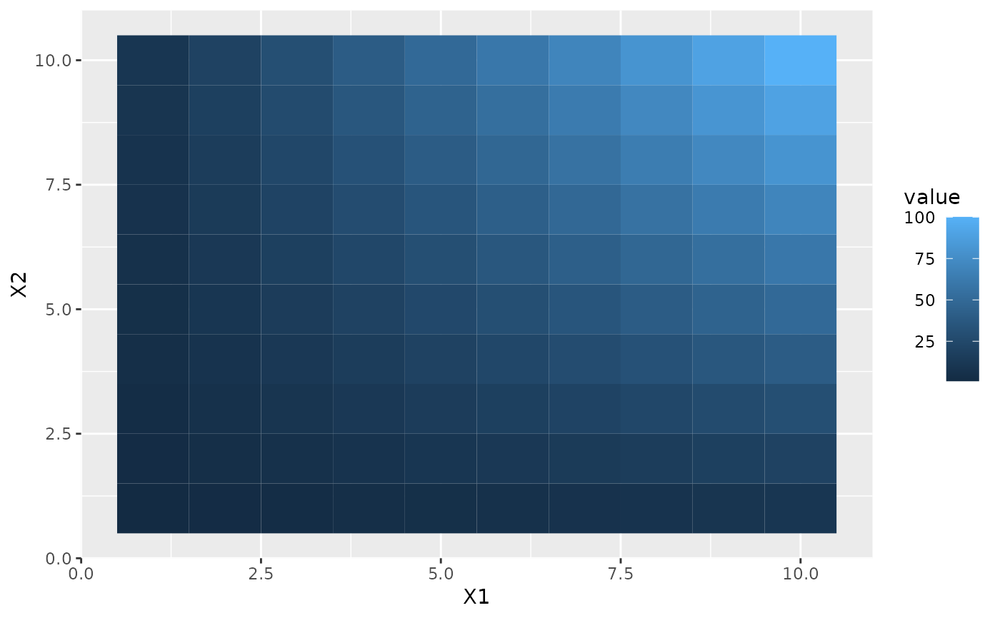
# label theme
p1 + guides(fill = guide_colourbar(label.theme = element_text(colour = "blue", angle = 0)))
# small number of bins
p1 + guides(fill = guide_colourbar(nbin = 3))
# large number of bins
p1 + guides(fill = guide_colourbar(nbin = 100))
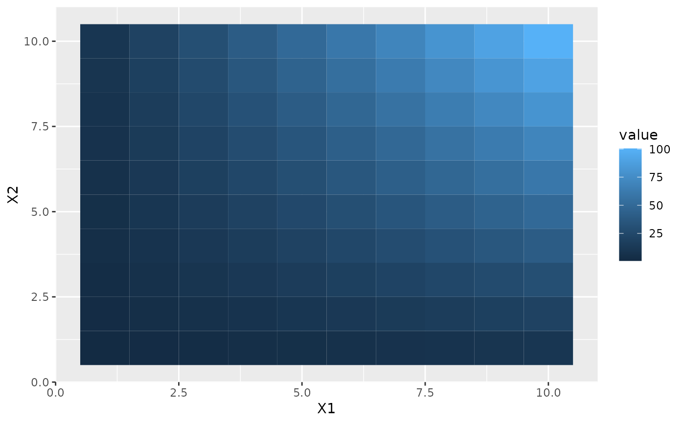
# make top- and bottom-most ticks invisible
p1 +
scale_fill_continuous(
limits = c(0,20), breaks = c(0, 5, 10, 15, 20),
guide = guide_colourbar(nbin = 100, draw.ulim = FALSE, draw.llim = FALSE)
)
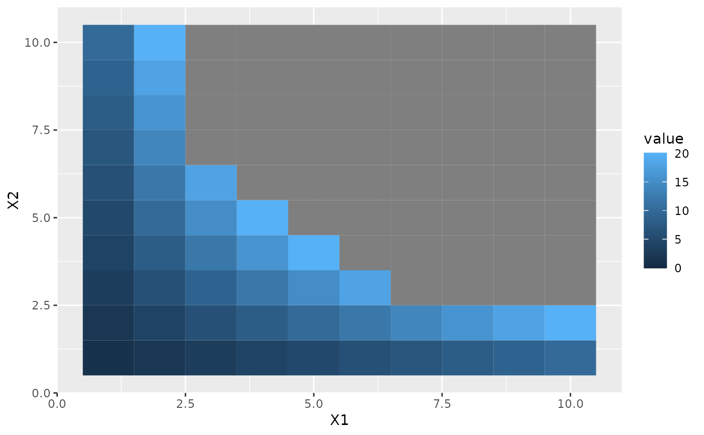
# guides can be controlled independently
p2 +
scale_fill_continuous(guide = "colourbar") +
scale_size(guide = "legend")
 p2 + guides(fill = "colourbar", size = "legend")
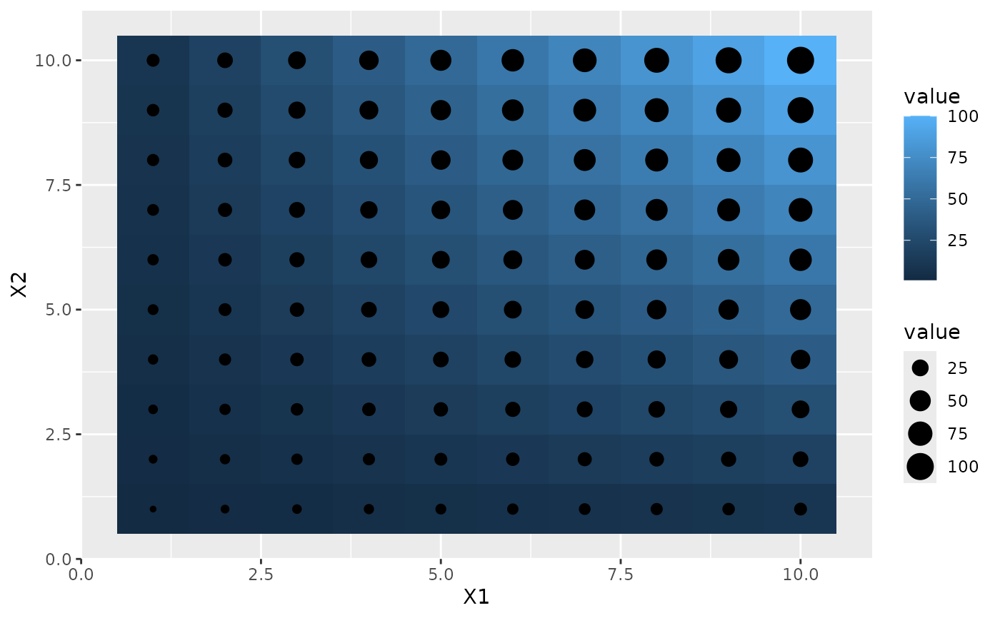
p2 +
scale_fill_continuous(guide = guide_colourbar(direction = "horizontal")) +
scale_size(guide = guide_legend(direction = "vertical"))
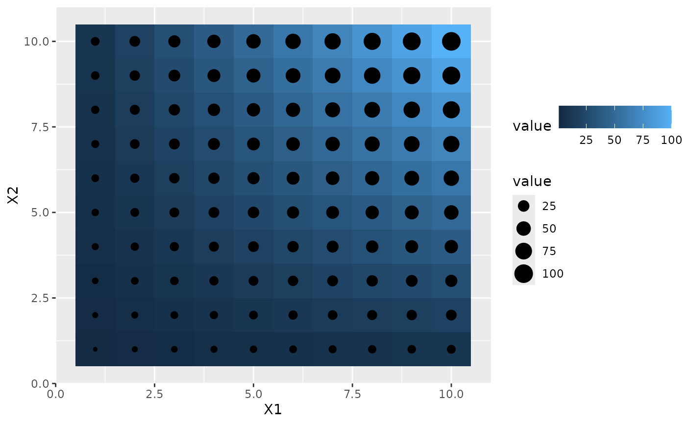
p2 + guides(fill = "colourbar", size = "legend")
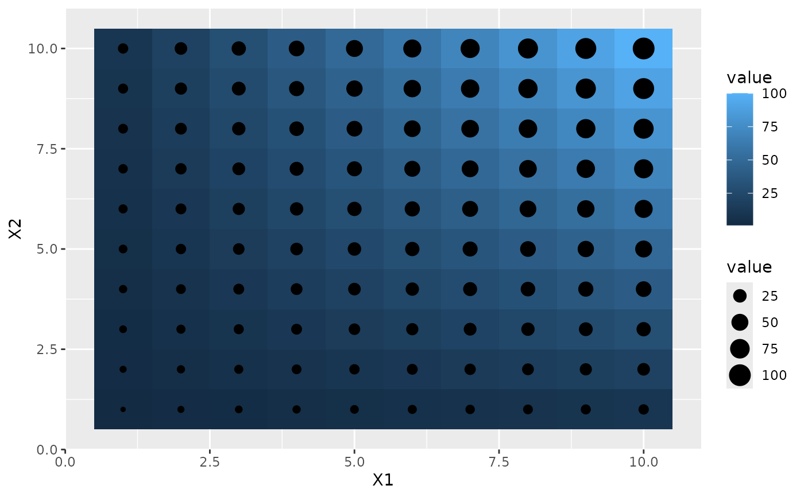
p2 +
scale_fill_continuous(guide = guide_colourbar(direction = "horizontal")) +
scale_size(guide = guide_legend(direction = "vertical"))
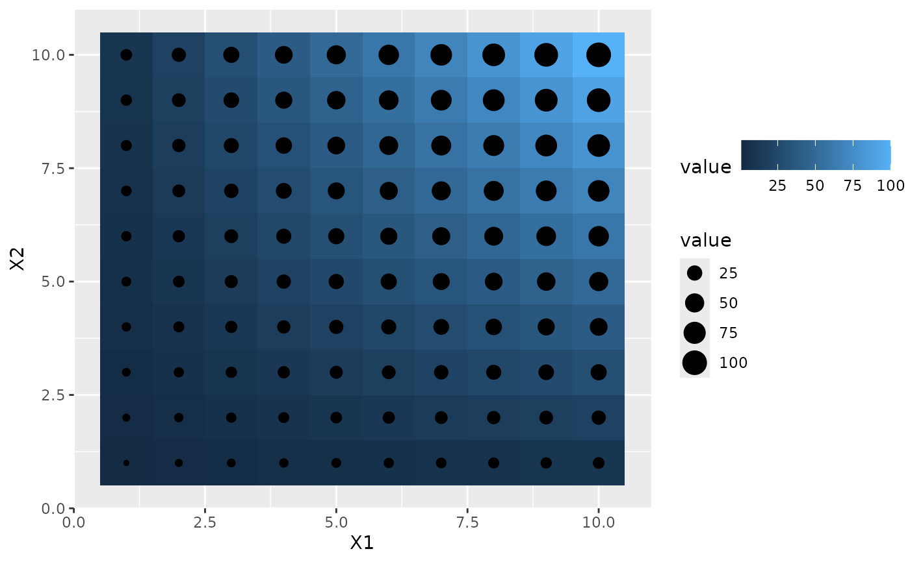